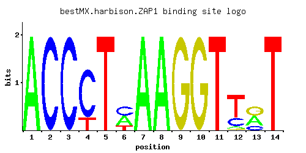

ZAP1
YJL056C, ZRG10
Zinc-regulated transcription factor; binds to zinc-responsive promoters to induce transcription of certain genes in presence of zinc, represses other genes in low zinc; regulates its own transcription; contains seven zinc-finger domains
Best-performing DNA-binding model.

View and copy the recommended matrices ↘
A | 0.999 0.001 0.001 0.001 0.001 0.400 0.999 0.999 0.001 0.001 0.001 0.065 0.400 0.001 C | 0.001 0.999 0.999 0.799 0.001 0.400 0.001 0.001 0.001 0.001 0.001 0.235 0.200 0.001 G | 0.001 0.001 0.001 0.001 0.001 0.001 0.001 0.001 0.999 0.999 0.001 0.035 0.400 0.001 T | 0.001 0.001 0.001 0.200 0.999 0.200 0.001 0.001 0.001 0.001 0.999 0.664 0.001 0.999
A | 99 0 0 0 0 40 99 99 0 0 0 6 40 0 C | 0 99 99 79 0 40 0 0 0 0 0 23 20 0 G | 0 0 0 0 0 0 0 0 99 99 0 3 40 0 T | 0 0 0 20 99 20 0 0 0 0 99 66 0 99
A | 1.14 -5.77 -5.77 -5.77 -5.77 0.22 1.14 1.14 -5.77 -5.77 -5.77 -1.59 0.22 -5.77 C | -5.19 1.71 1.71 1.49 -5.19 0.80 -5.19 -5.19 -5.19 -5.19 -5.19 0.27 0.11 -5.19 G | -5.19 -5.19 -5.19 -5.19 -5.19 -5.19 -5.19 -5.19 1.71 1.71 -5.19 -1.64 0.80 -5.19 T | -5.77 -5.77 -5.77 -0.47 1.14 -0.47 -5.77 -5.77 -5.77 -5.77 1.14 0.73 -5.77 1.14
Alternative candidate matrices 2
Historical matrix candidates from the original ScerTF database. Expand a source to inspect its original logo, scores, and matrix values.
ZAP1Foat et. al.P = 3.12e-05View matrix ↘
ZAP1Macisaac et. alP = 4.48e-13View matrix ↘
Gene-level annotations and interactions.
Genes bound in ChIP-chip experiments 69 genes
YAL001C, YBL109W, YBL111C, YBL112C, YBL113C, YBR048W, YBR254C, YBR255W, YCL065W, YCL066W, YCL067C, YCL068C, YCL074W, YCR039C, YCR040W, YCR041W, YCR105W, YDL044C, YDR042C, YDR064W, YDR065W, YDR066C, YDR098C, YDR526C, YDR543C, YEL012W, YER065C, YFL062W, YGL022W, YGL023C, YGL134W, YGL255W, YGR024C, YGR084C, YGR222W, YGR296W, YHR091C, YHR145C, YHR193C, YHR194W, YIL070C, YIL133C, YJL015C, YJL055W, YJL056C, YJL188C, YJL191W, YJL192C, YKL072W, YKL175W, YKL176C, YLR061W, YLR073C, YLR130C, YLR131C, YLR368W, YML065W, YML066C, YML132W, YML133C, YNL253W, YNL254C, YNL337W, YOL026C, YOL121C, YOL166C, YPL283C, YPR202W, YPR203W
Genes affected by TF deletion 60 genes
YHL012W, YPL207W, YMR040W, YPL240C, YKL073W, YKL104C, YPL016W, YKR103W, YGR032W, YMR315W, YGL181W, YML006C, YNL281W, YIL117C, YJR025C, YJR148W, YDR195W, YLR348C, YLR130C, YPL088W, YFL014W, YLR349W, YOL143C, YOR298C-A, YBR296C, YKR061W, YKR093W, YOL031C, YGL055W, YHR134W, YPR096C, YLR231C, YML130C, YNL064C, YOR080W, YPL061W, YJR130C, YKL001C, YOL156W, YLR355C, YNL160W, YOL119C, YHR018C, YIL170W, YJR104C, YDL124W, YJL079C, YLR453C, YMR184W, YOR027W, YGL255W, YIL101C, YMR062C, YMR034C, YNL104C, YLR049C, YLR423C, YNL234W, YAL029C, YFR030W
Genes supported by both experiments 2 genes
YGL255W, YLR130C